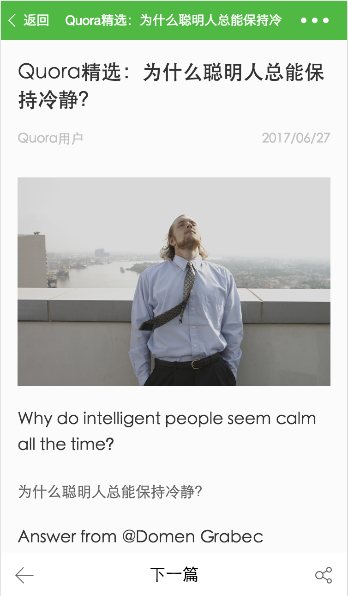

🇨🇳 微信小程序课程，面向所有具备前端基础知识的同学 🇨🇳
§ 阅读要求
读者需要具备但不限于以下技能
- HTML
- JavaScriptes6更佳
- CSS
一共四部分十五小节，适合七天的训练营。
从现在开始，我假装你已经掌握了 html、 css以及 ES6 ☝️
§ 目标导向
本教程以实战项目驱动，最终实现一个完整的小程序
列表页面：请求接口，并展示列表页面数据

详情页面：以文章id为参数，获取文章详情

详情页面，点击图片，展示大图

§ 教程大纲
- 第一章：小程序初级入门教程
- 第二章：小程序中级实战教程：预备篇
- 第三章：小程序中级实战教程：列表篇
- 第四章：小程序中级实战教程：详情篇
- 第五章：课后作业练习
§ 学习方式
教程以 git 分支的方式管理，比如学习第三章第一节 列表-静态页面制作 时候，需要切换到 ch3-1 分支，然后把分支目录 code/ 导入到微信开发工具编辑器，跟随教程进行实战代码操作。操作如下：
-
通过
git把项目复制到本地
git git clone https://github.com/ikcamp/wechat-xcx-tutorial -
切换目录
cd wechat-xcx-tutorial -
在当前目录下切换分支
git checkout ch3-1
注意： 每一分支的 code/ 内容，皆是上一节内容操作完成后的结果。比如 ch3-2/code 就是上一节课程 ch3-1/code 随教程操作后的结果。
§ 教程完整代码
教程的完整代码在分支
完整代码中，请自行查阅
§ 课后作业
整个教程学习过后，可以切换到
教程作业分支，并完成作业，目录下有相应的作业答案，请自行完成练习。
§ 核心人员

aximario |

pavelShen |

pangz1 |

tinyuen |

roeis |

sqzhuyi |

longdiandian9 |

brucecham |